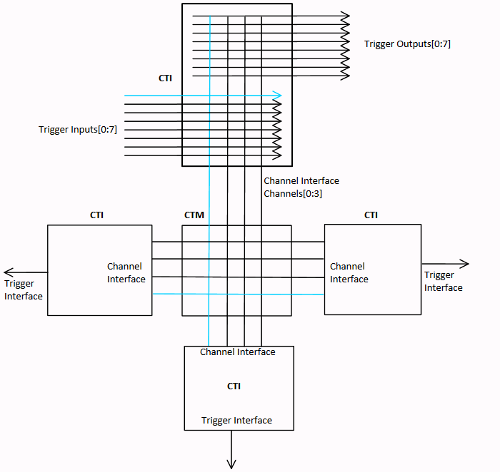

Cross Triggering is supported by the ECT module supplied by ARM®. ECT provides a mechanism for multiple subsystems in a SoC to interact with each other by exchanging debug triggers. ECT consists of two modules:
The figure below shows how CTIs and CTM are used in a generic setup.

CTM forms an event broadcasting network with multiple channels. A CTI listens to one or more channels for an event, maps a received event into a trigger, and sends the trigger to one or more CoreSight components connected to the CTI. A CTI also combines and maps the triggers from the connected CoreSight components and broadcasts them as events on one or more channels. Through its register interface, each CTI can be configured to listen to specific channels for events or broadcast triggers as events to specific channels.
In the above example, there are four channels. The CTI at the top is configured to propagate the trigger event on Trigger Input 0 to Channel 0. Other CTIs can be configured to listen to this channel for events and broadcast the events through trigger outputs, to the debug components connected to these CTIs. CTIs also support channel gating such that selected channels can be turned off, without having to disable the channel to trigger I/O mapping.